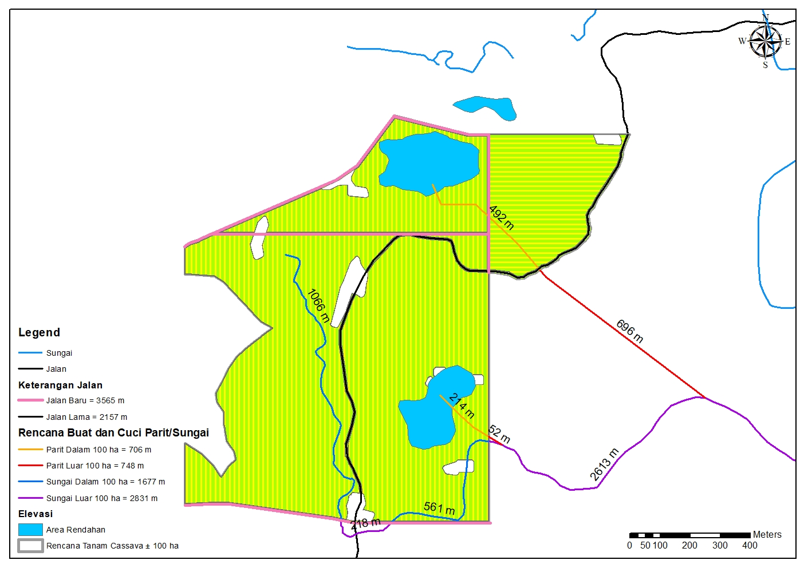

Cassava Planting Plan Map
This project was carried out by selecting areas within former, unproductive Industrial Plantation Forests (HTI). The selection focused on zones with gentle slopes, suitable for cassava cultivation based on agronomic requirements. Once suitable areas were identified, spatial blocking was conducted, including the layout of planned planting rows optimized for cassava planting mechanization.